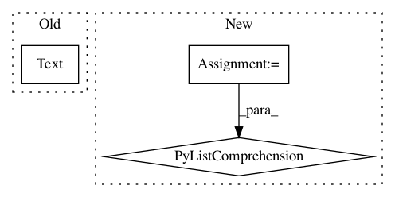

c402572627812ef17bdda31c027cd24159ac73ee,cellprofiler/modules/run_imagej.py,RunImageJ,create_settings,#RunImageJ#,79
Before Change
This is the ImageJ macro to be executed. For help on
writing macros, see <a href="http://rsb.info.nih.gov/ij/developer/macro/macros.html">here</a>.)
self.options = cps.Text(
"Options", "",
doc = <i>(Used only if running a command)</i><br>
Use this setting to provide options to the command.)
self.wants_to_set_current_image = cps.Binary(
"Input the currently active image in ImageJ?", True,
doc=<p>Check this setting if you want to set the currently
After Change
This is the ImageJ macro to be executed. For help on
writing macros, see <a href="http://rsb.info.nih.gov/ij/developer/macro/macros.html">here</a>.)
all_engines = ij2.get_script_service(get_context()).getLanguages()
self.language_dictionary = dict(
[(engine.getLanguageName(), engine) for engine in all_engines])
self.macro_language = cps.Choice(
"Macro language",
In pattern: SUPERPATTERN
Frequency: 3
Non-data size: 3
Instances
Project Name: CellProfiler/CellProfiler
Commit Name: c402572627812ef17bdda31c027cd24159ac73ee
Time: 2012-12-13
Author: leek@broadinstitute.org
File Name: cellprofiler/modules/run_imagej.py
Class Name: RunImageJ
Method Name: create_settings
Project Name: facebookresearch/pytext
Commit Name: bc6e778bc0523f463ae17ffe6f32ce2c3ff4e7b4
Time: 2019-03-12
Author: snl@fb.com
File Name: pytext/data/test/tensorizers_test.py
Class Name: TensorizersTest
Method Name: test_create_byte_tensors
Project Name: estnltk/estnltk
Commit Name: 158e4cb12d7ab478ea230e099a18644b2ac2bd17
Time: 2015-07-01
Author: tpetmanson@gmail.com
File Name: estnltk/corpus.py
Class Name:
Method Name: read_json_corpus